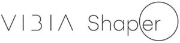

Trade Mark Journal No.2025/045 7 November 2025
WO0000001882070 (9,11)
Office of origin: Spain
Date of International Registration:21 May 2025
Date of designation in the UK:
21 May 2025

Consists in the designation VIBIA SHAPER arranged in one line with a fancy font. The term VIBIA is depicted in uppercase without a vertical bar in the B and the A is an inverted capital V. The letter S of the word SHAPER is depicted in uppercase and the rest in lowercase, with the last two letters, “er,” enclosed in a circle
International priority date claimed: 22 November 2024
(Spain)
(4293194)
- Class 9
- Light modulators; dimmer switches; electric light dimmers [regulators]; electronic control mechanisms [electric ballasts] for LED lamps and light fixtures; light dimmers [regulators]; electric light regulators [dimmers]; light sensors; electric switches; electrical controllers; programmable logic controllers; LED controllers; software for lighting control; application software for lighting control; software for the remote control of electric lighting apparatus; control software for lighting; lighting regulators; switches for lighting; lighting ballasts; computer hardware for controlling lighting; remote control apparatus for controlling lighting; programmable controls for lighting apparatus and instruments; control consoles for lighting apparatus and instruments.
- Class 11
- Ceiling lighting [lamps, lighting apparatus]; light fixtures with light-emitting diodes [LED]; fiber-optic lighting apparatus; electric lighting apparatus; lighting apparatus incorporating optical fibers; fluorescent lighting fixtures; stage lighting apparatus; lighting apparatus and installations; decorative electric lighting apparatus; diffusers being parts of lighting apparatus; filters for lighting apparatus; adapted reflectors for lighting apparatus; lighting fittings; lighting apparatus; lighting accessories; light bulbs; electric lamps; wall lamps; chandeliers [lamps]; downlights; ceiling lights [lamps]; halogen lamps; incandescent lamps; solar lamps; flexible lamps; klieg lights; fluorescent lamps; LED lamps; lamp reflectors; lamp globes; floor lamps; lamps for lighting; lamp holders; lamp fittings; accessories for lamps; night lamps; wall lamps; arc lamps; lamps for washrooms; lampshade holders; lamp chimneys; glass for chandeliers [lamps]; floor lamps; studio lamps; table lamps; desk lamps; lampshades; lamps [lighting apparatus]; lamps for home lighting; portable lamps [for lighting]; lamps for outdoor use; accessories for electric lamps; solar lamp units; sun ray lamps; lamps for Christmas trees; glass lampshades for lamps; bases for non-electric lamps; hanging supports for lamps; lamps hanging from the ceiling; electric lamps for indoor lighting; portable hand lamps [for lighting]; neon lamps for lighting; indirect lighting lamps; ceiling lighting, namely, lamps and lighting apparatus; lighting equipment and apparatus; lighting installations incorporating near-field communication (NFC) technology.
VIBIA LIGHTING, S.L.U
Representative: PONTI & PARTNERS, S.L.P, Edifici PRISMA.,, Av. Diagonal núm. 611-613 Planta 2, E-08028 BARCELONA, SPAIN